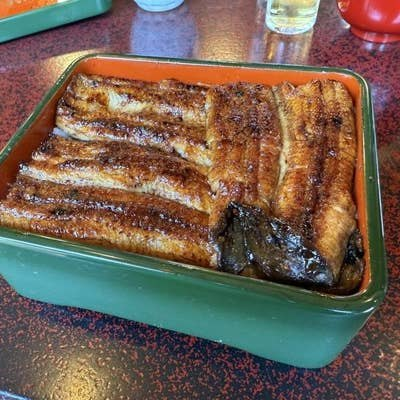
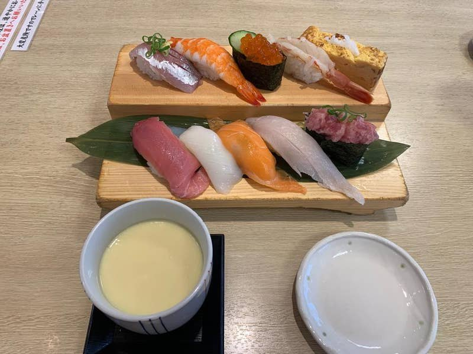

ALL-NEW DINNER PICKS · VERIFIED OPEN TUE 11/24
11/24 全新晚餐 3 选 1（9 实拍＆9 真实口碑）
🎯 3 种完全不同风格，已逐一核实 2026/11/24（周二）全部正常营业：
追求此行最惊艳百年名店选 ① うなぎ 桜家（三岛170年炭烤鳗鱼）；想8分钟平路吃骏河湾厚切地鱼选 ② 沼津魚がし鮨 流れ鮨 大仁店（EPARK手机取号）；雨夜泡完汤想7分钟热辣炭火烤肉＋宽敞包间不赶时间选 ③ カルビ一丁 大仁店（营业至24:00）！点击任意照片可放大预览。
推荐 ① ・ 1856年创业・三岛鳗鱼御三家之首
官网实核 11/24 周二营业
うなぎ 桜家（三島広小路・百年富士涌水炭烤鳗鱼）
★ 4.1（5,900 条评价）
📍 位置：三島市広小路町13-2（距旅馆 18分钟平路・提携シンコウパーキング）
🕒 营业：11:00–20:00（周三休｜15:30–17:00 偶有备料准备中・售完即止）
💴 人均：1匹重箱/丼 ¥5,500｜1.5匹 ¥7,700（仅现金 / PayPay・不可刷卡！）
📞 电话：055-975-4520（可电话提前预留鳗鱼份数，雨夜平日排队短）
安政三年（1856 年）创业的静冈传奇鳗鱼老铺！将活鳗置于冰凉的富士山伏流水中净养 3–4 天彻底去除土腥味，再以备长炭大火现烤，蘸入传承百年的爽口老酱汁。外皮微焦、入口即化，连肝吸都鲜美无苦味！雨夜周二错峰（17:15–18:00）比周末午市轻松太多！（同商圈零等位备选：すみの坊 本町店 16:30–20:00 无休）

招牌うなぎ重箱（1.5匹）
💬 食客评价 1 ｜ Tatsuya.H（Retty・2026/08 实访・Excellent）品质与火候封神
三岛鳗鱼御三家之首！两层老铺古色古香，旁边还有独立空调候位室。鳗鱼品相极佳、肉质松软蓬松，老酱汁咸淡克制不抢戏，门口写着当日就进了 500 多条新仔鳗，热闹得实至名归！
💬 食客评价 2 ｜ k.Sato / Kenji Murai（Retty・2025 晚餐实访・Excellent）晚市错峰体验极佳
午市动辄排大队，但晚上 17:30 左右去只等了约 3 组就顺利入座（提前电话预留好鳗鱼份数更稳）。鳗鱼夹起来软到快散开，炭火焦香扑鼻，配うざく（醋拌鳗鱼黄瓜）和骨仙贝太满足！
💬 食客评价 3 ｜ 河原 利行 / yuki.a（Retty・实访・Excellent）提携停车＋白烧必试
把车停在三岛広小路站平交道旁的提携「シンコウパーキング」，结账出示停车券有减免！肝吸和糠渍黄瓜都附在重箱里，另外单点「白焼（小）」蘸山葵酱油更是吃出富士伏流水零腥味的巅峰水准！
推荐 ② ・ 8分钟平路・沼津鱼市竞拍权超厚切
年中无休 11:00–21:00
沼津魚がし鮨 流れ鮨 伊豆の国大仁店
★ 4.2（1,901 条评价）
📍 位置：伊豆の国市吉田380-1（距旅馆仅 8分钟平路・免费超大平地车位）
🕒 营业：11:00–21:00（LO 20:30｜年中无休・全天不午休）
💴 人均：约 2,000–3,500 日元（支持刷卡 / PayPay）
📱 省排：支持 EPARK 手机取号 ｜ 📞 0558-75-0808 / 0120-48-1122
拥有沼津港鱼市直接竞拍权的静冈国民级寿司名店！日本首创「流れ鮨」：平板点单后由师傅现握、经高速滑轨直送到你们桌前，绝无久转不鲜。主打「ネタでかすぎ（鱼生大到盖住饭团）」！招牌近海握り（送鲜美蟹汁）、地魚三種盛り、整条活杀穴子天妇罗和炸竹荚鱼全都超强，离旅馆仅 8 分钟且停车宽敞到新手闭眼停！

大仁店实拍・近海厚切＆蒸蛋

大仁店外观＆超大免费车位
💬 食客评价 1 ｜ 宮本 直人（Retty TOP USER・3访・Excellent）好吃到隔天二刷
来伊豆第一天吃完太惊艳，第二天居然又来吃了一次！推荐「店長おすすめ6貫」「地魚三種盛り」以及一整条「活〆穴子一本天ぷら」和炸竹荚鱼，热菜和寿司一样顶，完全不像连锁店水准！
💬 食客评价 2 ｜ k.Sato（Retty・14访常客・2025/04 晚餐）18点前免排队・附蟹汁
平日 18:00 前到店直接免等位落座！点了近海握りDX，星鳗超级巨大，每一贯都又厚又大超顶饱，套餐还附带鲜味爆棚的「カニ汁（蟹汁）」，高性价比稳得不行。
💬 食客评价 3 ｜ H.Matsunaga / 山口 尚裕（Retty・实访・Excellent）EPARK神器・静冈必吃
用 EPARK 提前手机取号丝滑入座！平板点完餐食沿滑轨咻地送到桌前特别好玩，竹荚鱼、平政、炙烤秋刀鱼和鳍边肉超鲜。在静冈不知道晚饭吃什么时，选这家或者さわやか绝不踩雷！
推荐 ③ ・ 7分钟平路・雨夜泡汤最解压热辣烤肉
营业至 24:00・支持网上订座
カルビ一丁 大仁店（无烟炭火烤肉・宽敞半包间）
★ 4.1（689+ 条评价）
📍 位置：伊豆の国市中島41-1（距旅馆仅 7分钟平路・免费超大车位）
🕒 营业：11:00–24:00（LO 23:00｜年中无休・夜猫福音）
💴 人均：约 3,000–4,500 日元（单点或 4大名物放题 ¥4,059 含税）
📞 电话：0558-77-2929（支持 HotPepper 网上直接订座）
今天午后下雨气温降至 12–13℃，泡完弘法の湯北投石岩盘浴，如果连吃了两顿海鲜想换换重口味，开车 7 分钟平路吃一顿热气腾腾的炭火烤肉太爽了！主打厚切花刀牛排＆黑毛和牛霜降肉，兼有单点与高性价比自助放题（配石锅拌饭、冷面、蒜油烤肉杯和丰富甜品），且营业到午夜 24:00，哪怕等 20:00 雨停赏满月（或二刷虹之乡灯光秀）后再去也完全不赶！

宽敞木质半包间座席
💬 食客评价 1 ｜ あき（HotPepper・2026/11/01 4人晚餐・★5.0）4人聚餐强烈好评
和家人 4 个人点了「4大名物堪能放题（¥4,059含税）」，店员很热情地推荐招牌菜，每一样都很好吃！吃得又开心又尽兴，以后还会再来！
💬 食客评价 2 ｜ がっちゃん（HotPepper・2026/11/01 5人晚餐・★5.0）配菜丰富大满足
5 个人去吃晚餐，一直吃到心满意足！除了烤肉本身，石锅拌饭、汤品、冷面和甜点等副菜选择非常多，每个人都能按自己口味点得很爽。
💬 食客评价 3 ｜ あけもん / カオリン（HotPepper・2026/11 晚餐实访）上菜快・肉质胜连锁
提前网上预约后上菜速度非常顺畅，肉和蔬菜都很新鲜美味，比一般平价烤肉连锁的肉质更好，店员服务和性价比评价都高达 4.3 分！
💡 小酌不挪车 / 昨日备选补充（今天 11/24 周二同样营业）：
- 若昨晚 11/23 没吃 ひょうたん寿司（距旅馆步行 9 分钟・16:30–20:00・司机可喝酒）或 さわやか 函南店（车程 12 分钟・10:30–22:00），今天周二也全部正常营业！
- 温泉街就近新选择：リストランテ ボッカデラベルタ（古奈4.3★生态意餐・车程4分・17:00–20:30）或 とり西（伊豆长冈站炭火烧鸟・17:30–22:30 仅现金/PayPay）。